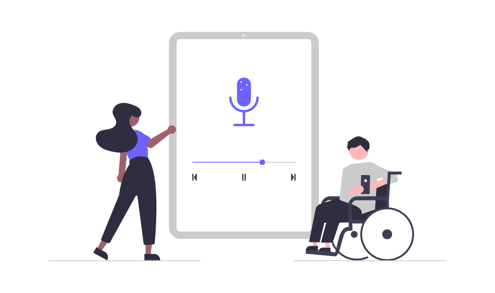

<ion-header class="header">
  <ion-toolbar class="ion-safe-area-wrapper">
    <ion-buttons slot="start">
      <ion-back-button defaultHref="/home"></ion-back-button>
    </ion-buttons>
    <ion-title *ngIf="post_data_all">{{post_data_all.title.rendered}}</ion-title>
  </ion-toolbar>
</ion-header>

<ion-content>
  
  <ion-text *ngIf="post_data_all">
    <p [innerHTML]="post_data_all.content.rendered"></p>
  </ion-text>
</ion-content>